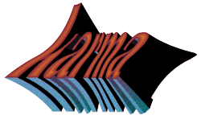

The Karma Home Page
Karma is a toolkit for interprocess communications,
authentication, encryption, graphics display, user interface and
manipulating the Karma network data structure. It contains KarmaLib
(the structured libraries and API) and a large number of modules
(applications) to perform many standard tasks. A suite of
visualisation tools are distributed with the library.
For a more detailed description of the Karma Library, read the
Karma Library Readme file.
If you have the Karma HTML documentation files installed under
/usr/local/karma/www then click
here to use that
copy: it will be much faster. The
main Karma home page documents the current beta version of Karma,
so there may be a few new things there which your local copy does not
have. The documents you are reading are for Karma version
1.7.25
A mirror site is
maintained at the
Radio Astronomy Group
, Department of Physics and Astronomy, The University of Calgary.
There is also an update policy document
which describes how things may change from one release or version of
Karma to the next. Karma is freely available, and is distributed under
the GNU
GPL and
LGPL (applications
and libraries, respectively).
The Karma documentation is available here.
Click here to get the current runtime distributions of
Karma. Alternatively, you can check out the Karma ftp site
(mirrored
in Calgary, Canada), which contains older runtime distributions as
well as source code.
Screen Snapshots
Screen snapshots of some of the visualisation tools have been taken,
and are available here. To get documentation on these tools please see
the User Manual.
- kvis, the
general-purpose image/movie display tool which can load multiple
datasets, display multiple windows, overlay contours, annotations,
show multiple overlaid profiles, and much more
- koords, a tool for
applying a co-ordinate system header to an image
- kpvslice, a tool
for interactively displaying position-velocity slices
- krenzo, a tool for
displaying contours of channel maps
- kshell, a tool for
finding and analysing expanding shells
- khuei, a tool for
displaying complex or amplitude/phase data using hue and intensity
- kslice_3d, a tool
for displaying three orthogonal slices through a volume
Mailing Lists
There are two mailing lists available. In either case, send a line in
the body of the message thus:
Subscribe LIST [ADDRESS]
where LIST is the mailing list you want to subscribe to, and
[ADDRESS] is an optional email address you wish to
subscribe. If you do not specify the email address, your reply address
will be subscribed.
Send an email to to be
put on the mailing for announcements for public releases of
Karma. Public releases contain source code as well as binary
distributions, and usually come out once or twice a year. The name of
the mailing list is karma.
Send an email to to be
put on the mailing for announcements for beta releases of
Karma. Beta releases contain only binary distributions, and usually
come out once or twice a month. Beta releases are intended to provide
early access to new features and bugfixes for the public releases. The
name of the mailing list is karma-beta.
References
If you use this software and its use leads to a publication, please
let me know, and
include one of the references below in your publication:
-
Gooch, R.E., 1995, "Space and the Spaceball", in Astronomical
Data Analysis Software and Systems IV, ASP Conf. Series vol. 77,
ed. R.A. Shaw, H.E. Payne, & J.J.E. Hayes, ASP, San Francisco,
p.144-147, ISBN 0-937707-96-1
- Gooch, R.E., 1995, "Visualisation: from Data to Understanding", in
Workshop on Applications of Radio Science 1995, Australian
Academy of Science through the National Committee for Radio Science
ISBN 1-86408-030-2
-
Gooch, R.E., 1996, "Karma: a Visualisation Test-Bed", in
Astronomical Data Analysis Software and Systems V, ASP
Conf. Series vol. 101, ed. G.H. Jacoby & J. Barnes, ASP, San
Francisco, p.80-83, ISSN 1080-7926
- Gooch, R.E., 1995, "Astronomers and their Shady Algorithms", in
IEEE Visualisation '95, ed. G.M. Nielson \& D. Silver,
pub. IEEE, p.374-377 ISBN 0-8186-7187-4
-
Gooch, R.E., 1996, "Grasping the Wispy Tendrils", in
Publications of the Astronomical Society of Australia,
vol. 14, no. 1, p.106 ISSN 1323-3580
Author: Richard Gooch
{kind=link}
{kind=link}
{kind=link}
{kind=link}
{kind=link}
{kind=link}
{kind=link}